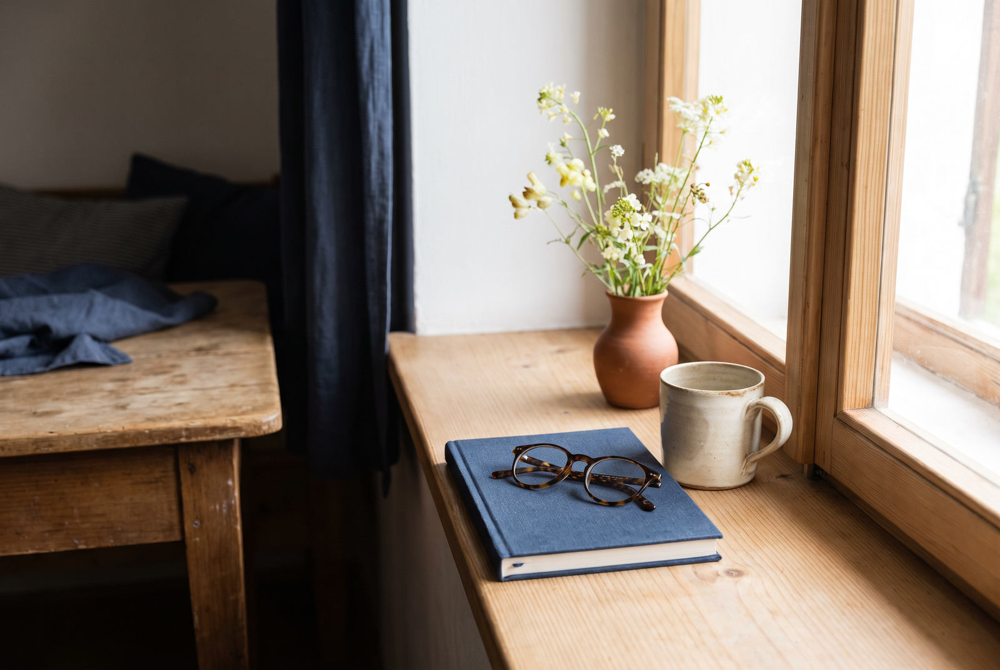

APRÓ RÉSZLETEK A MINDENNAPOKBAN
Néha nem az a kérdés, mit látsz.
Egy virág a párkányon. Egy ismerős könyv. A szemüveg, amelyet éppen az előbb tettél le valahová. Vannak részletek, amelyeket csak akkor veszünk észre, amikor egy pillanatra megállunk.
MEGNÉZEM A RÖVID VIDEÓTEGY MÁSFAJTA NÉZŐPONT
Egy pillanat. Egy részlet, amely eddig háttérben maradt.
A rövid film olyan hétköznapi jeleneteket mutat meg, amelyeket mindannyian ismerünk: fény az asztalon, egy virág színe, egy nyitott könyv és néhány perc csend.
Nem bonyolult módszerről és nem garantált eredményről szól. Inkább arról, hogyan tekintünk azokra a dolgokra, amelyek minden nap körülvesznek bennünket.
„Néha elég, ha ugyanarra a jelenetre egy kicsit más szögből nézünk.”MUTASD MEG EZT A RÉSZLETET

nézd meg még egyszerA VIDEÓ VÉGÉN
Van ott egy apró elem, amely megváltoztatja a képet.
Első pillantásra nem feltűnő. Éppen ezért érdekes látni, hogyan kapcsolódik ez a csendes részlet a megszokott napi rutinhoz.
MEGNÉZEM A FOLYTATÁSTHirdetési tájékoztató: ez egy szponzorált szerkesztőségi anyag. A külső videó partneri ajánlatot tartalmazhat. Ezen az oldalon nem történik vásárlás.
A tartalom általános tájékoztató jellegű, nem minősül diagnózisnak, orvosi tanácsadásnak, kezelésnek vagy egyéni eredmény ígéretének.